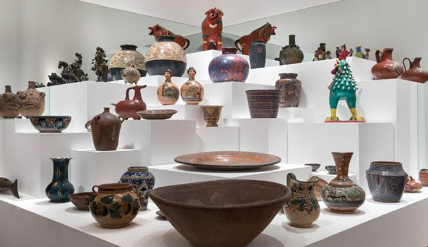

ARTESANIA Y ARTE POPULARES

Las artesanías y el arte popular son expresiones creativas hechas a mano que reflejan la identidad, la historia y las tradiciones de una comunidad
- Principales diferencias
- Artesanía: Objetos elaborados de forma manual o con herramientas simples que suelen tener un propósito principalmente utilitario (como platos, ropa, cestas o utensilios de cocina)
- Arte Popular: Obras que trascienden lo utilitario para expresar un valor estético, simbólico, ceremonial o comunitario profundo, transmitido de generación en generación
- Ejemplos emblemáticos en México
- Alebrijes (Oaxaca): Figuras fantásticas talladas en madera de copal y pintadas a mano con colores vivos
- Talavera (Puebla y Tlaxcala): Cerámica esmaltada con decoraciones tradicionales en azul, blanco y tonos minerales
- Arte Huichol / Wixárika (Nayarit, Jalisco, Zacatecas): Cuadros de estambre o figuras adornadas con chaquira que representan su cosmovisión sagrada
- Árboles de la vida (Metepec, Estado de México): Esculturas de barro modeladas a mano con gran complejidad narrativa
- Sarapes y Textiles: Tejidos en telar de cintura o pedal con herencia indígena y mestiza (como los de Tlaxcala, Saltillo o los bordados de Chiapas)